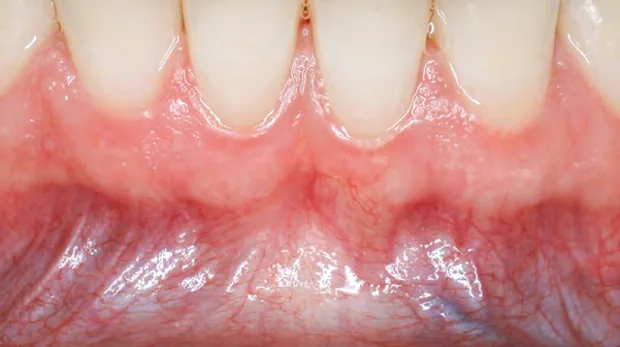
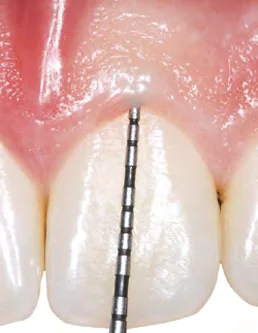
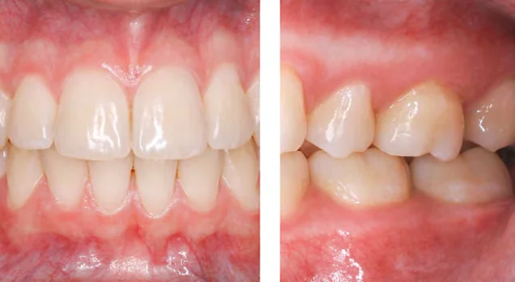

نسخه استخراجشده؛ ترجمه یا تأیید علمی انجام نشده است. وضعیت: captured
لثه (Gingiva) بخشی از مخاط دهان است که استخوان آلوئول و گردن دندانها را میپوشاند. از نظر تشریحی به سه بخش تقسیم میشود:
لثه آزاد یا مارجینال (Free / Marginal Gingiva): لبهی انتهایی لثه که به دندان چسبندگی محکم ندارد. پهنای آن حدوداً ۱ میلیمتر است و دیوارهی نرم شیار لثهای (Gingival Sulcus) را میسازد.
لثه چسبنده (Attached Gingiva): ادامهی لثه آزاد به سمت اپیکال؛ محکم و بدون تحرک، به پریوست استخوان آلوئول و سمان چسبیده است.
لثه بیندندانی (Interdental Gingiva): بخشی که فضای بین دو دندان مجاور را در زیر نقطه تماس پر میکند.
در لثهی سالم رنگ صورتی مرجانی (Coral Pink)، لبهی مارجین تیز و چاقویی (Knife-edge) و قوام آن سفت است.

فضای V شکل بین سطح دندان و لثه آزاد. دیواره نرم آن لثه آزاد، دیواره سخت آن سطح دندان و کف آن اپیتلیوم اتصالی (Junctional Epithelium) است. عمق آن در سلامت بافتی از نظر بالینی ۱ تا ۳ میلیمتر است.

فرورفتگی خطی کمعمقی که مرز بین لثه آزاد و لثه چسبنده را مشخص میکند و تقریباً در تراز اتصال مینا-سمان (CEJ) قرار دارد. توجه: این شیار فقط در حدود یکسوم تا نیمی از افراد قابل مشاهده است و نبودن آن غیرطبیعی محسوب نمیشود.
مرزی که لثه چسبندهی صورتی و سفت را از مخاط آلوئولار قرمز، متحرک و براق جدا میکند.
از ته شیار لثه تا اتصال موکوژنژیوال اندازهگیری میشود (نه از لبه مارجین!).
بیشترین پهنا: ناحیه ثنایاها ← ۳٫۵ تا ۴٫۵ میلیمتر
کمترین پهنا: ناحیه پرمولرها ← حدود ۱٫۸ تا ۱٫۹ میلیمتر
لثه بیندندانی از دو پاپیلای باکالی و لینگوالی تشکیل شده که با یک فرورفتگی زینیشکل به نام کول (Col) به هم متصل میشوند.

کول دقیقاً زیر نقطه تماس قرار دارد و غیرکراتینیزه است.
در دندانهای خلفی که سطح تماس پهن است، کول واضح و عریض است؛ در دندانهای قدامی با تماس نقطهای، معمولاً کول وجود ندارد.
به دلیل غیرکراتینیزه بودن و تجمع پلاک، ناحیه کول مستعدترین نقطه برای شروع بیماری پریودنتال است.
ظاهر پوست پرتقالی سطح لثه که فقط در لثه چسبنده دیده میشود و در لثه آزاد وجود ندارد. در حدود ۴۰ درصد بزرگسالان قابل مشاهده است.
⚠️ اشتباه رایج ۱: «لثه کراتینیزه» از لبه مارجین تا MGJ است، اما «لثه چسبنده» از ته شیار تا MGJ. این دو یکی نیستند.
⚠️ اشتباه رایج ۲: نبودن استیپلینگ در بزرگسال لزوماً بیماری نیست، ولی از دست رفتن استیپلینگِ قبلاً موجود نشانه زودرس التهاب است.
⚠️ اشتباه رایج ۳: کمترین پهنای لثه چسبنده در ناحیه پرمولر است، نه مولر.